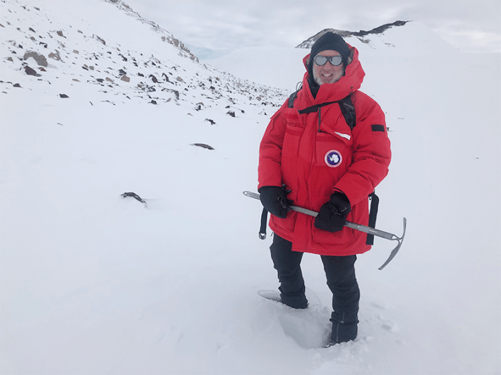
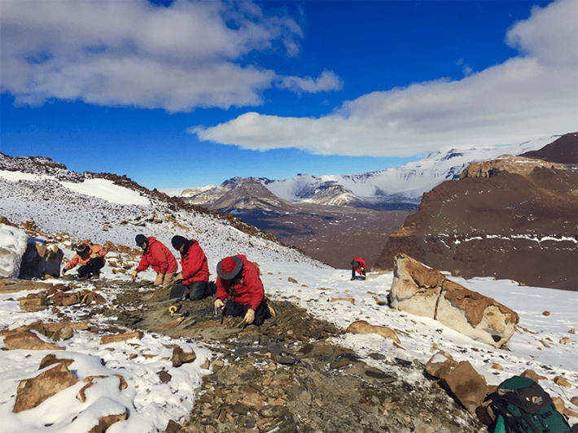

In January 2019, my team and I climbed to the top of an Antarctic peak to hunt for fossils of one of the first fish to walk on land. Our goal was to study the rocky summits of the mountains that protrude through the ice in this region. From this altitude, we could see the barren white plain of the polar ice cap for hundreds of miles in every direction. But we were there for the view below our feet.
Looking down, we saw maroon sandstones, siltstones, and shales that formed 380 million years ago in tropical rivers and lakes. The white fragments of fossil teeth and bones of ancient fish were even visible on the surface. The striking disconnect between the frozen landscape around us and the lush warm world inside the rocks shows how dramatically the planet has evolved over geological time.
Nautilus premium members can listen to this story, ad-free.
Nautilus members can listen to this story.
But the science of Earth’s polar regions goes beyond rocks and fossils. Scientific research at the poles can transform the way we see our entire world, from the origin of the universe, and the extraordinary adaptations of life, to ways that our planet can change during our own lifetimes.
Polar ice is disappearing as the U.S. cuts science to understand it.
Yet this important scientific exploration faces a barrage of threats. The whiplash induced by recently announced DOGE layoffs of dozens of federal personnel, court rulings reinstating some of them, and proposals to cut the National Science Foundation’s funding by 50 percent, places this groundbreaking and important research and exploration at risk.
These reductions in funding and staffing are coming at precisely the wrong time. The Copernicus Climate Change Service run by the European Union provides regular updates on the state of the planet from data gathered by Earth-observing satellites. Its most recent analysis showed that in February 2024 global sea ice reached an all-time minimum since measurements began in 1978. Arctic sea ice has declined 8 percent below its previously recorded lowest monthly extent, while Antarctic ice has melted to a level 24 percent below its historical average.

AT HOME ON THE ICE: The author at Deception Glacier in Antarctica in 2019. Photo by Adam Maloof, Princeton University.
As liquid water from melting ice enters the ocean it raises the levels of the seas and changes ocean currents that, in turn, alter coastlines and weather patterns across the globe. Polar ice is disappearing at a record pace while the United States federal government is cutting the work we need to understand and monitor it.
The scientific enterprise in polar regions depends on the skill, experience, and dedication of staff at Antarctic bases and those stateside. The loss of seasoned polar experts with specialized knowledge in extreme environment operations, ice navigation, and field safety will reverberate through Antarctic research programs for decades, as these skills, developed through 10 to 15 years on the ice, cannot be quickly replaced. We will be left with a dangerous knowledge gap that threatens not only scientific progress but also the safety of future expeditions.
The National Science Foundation runs three bases in Antarctica supporting nearly 1,000 people annually. This operation involves hundreds of researchers leading expeditions to build telescopes at the South Pole, study glaciers at the coast, the geology of the mountains, and ecology on the ice, land, and oceans. These efforts are part of a broader international scientific community, with researchers from over 40 nations collaborating across the continent under the Antarctic Treaty System. This remarkable framework of scientific diplomacy ensures that Antarctica remains dedicated to peaceful research, with countries often sharing facilities, data, and expertise to tackle complex global challenges that no single nation could address alone.
What happens at the poles doesn’t stay at the poles.
The construction and operation of the South Pole Telescope tells the story of the extremes that National Science Foundation staff can go to answer fundamental questions. Unlike a backyard telescope that visualizes the sky in visible light, the South Pole Telescope uses a 30-foot aperture scope to analyze microwave light. Every piece of this machine follows a long supply chain all the way to McMurdo Station on the Ross Ice Shelf, which is the main U.S. scientific station in Antarctica, then hundreds of miles more to the South Pole. And when things break, as they inevitably do in these conditions, spare parts can be thousands of miles away.
The features that make the South Pole Station so challenging are also reasons it is one of the most special places on Earth to put a telescope. Cold, dry, and unobstructed by pollution or atmospheric disturbances, the pole offers a high-resolution view of the sky. The South Pole Telescope is so sensitive that it can measure the oldest light in the universe, dating back to just 380,000 years after the Big Bang, when the universe was a hot, dense soup of charged particles. It can observe the afterglow of the Big Bang, known as the cosmic background radiation, in unique detail. The clarity of these images reveals patterns in this ancient light that telescopes in other regions of Earth cannot see. These structures help scientists understand how invisible dark matter may be bending space in different parts of the sky.
While Antarctica’s unique conditions allow us to peer into the cosmos’ distant past, the ice itself holds clues to humanity’s future. Polar ice has been our hidden partner, an invisible hand that shapes our world. Despite occupying just 8 percent of Earth’s surface, polar regions hold almost 70 percent of Earth’s freshwater. Consequently, what happens at the poles doesn’t stay at the poles—it sends ripples through Earth’s entire system. Every milestone in human evolution—from our species’ origins to the establishment of our social structures and technologies—occurred during an unusual time in Earth’s history: one with ice at the poles.

ICE FISHING: A field crew recovering Devonian Age fossil fish, on Aztec Mountain in Antarctica in 2017. Photo by Neil Shubin.
For thousands of years, our civilization has developed alongside coastlines, islands, and agricultural zones defined by geographies and weather patterns influenced by polar ice. But warming climates and melting ice bring changes far from the poles. Beaches in the U.S. Gulf Coast have been retreating almost two meters per year in places since the industrial revolution.
The clues inside West Antarctica’s rocks reveal how quickly these changes can unfold. This region, comprising about 15 percent of the entire continent, currently lies beneath an ice cap that covers virtually its entire surface. But the rocks along the glaciers tell a different story. Sediments formed in lakes 120,000 years ago show that this area was mostly ice-free during that period. With significantly reduced Antarctic ice, global sea levels stood approximately 14 feet higher than today. What’s particularly alarming is that these dramatic shifts in ice coverage and sea levels can occur within timeframes relevant to human civilization, not just on geological timescales of millions of years. These findings suggest that the massive transformations we associate with deep time might unfold within spans that matter to our societies and infrastructure.
Polar environments are an archive of our planet, like a safe containing our planet’s heirlooms. When polar regions melt, these vaults open, releasing ancient water, carbon, meteorites, and microbial life into our modern world. The Arctic is warming four to seven times faster than the global average. These changes aren’t merely surface phenomena—permafrost that has remained frozen for thousands of years now buckles and collapses.
Antarctica allows us to peer into the distant past and humanity’s future.
The Arctic’s permafrost holds 1,600 billion tons of carbon—roughly double the amount in today’s atmosphere. Thawing permafrost creates a feedback loop of warming that extends far beyond polar boundaries. As the permafrost melts, increasing amounts of carbon inside it are liberated into the atmosphere, heating the planet even more.Microbes released by melting ice and permafrost can infect animals and plants. A 2016 Anthrax outbreak in Siberia spread from the exposed carcasses of animals that were infected and perished over a century ago. Thousands of reindeer were killed, eight people were hospitalized, and one child died.
While there are no known infections from melting ice and permafrost in Antarctica, we are only beginning to understand the microbial richness of the continent. Cores drilled over two miles into the ice have revealed freshwater lakes, some the size of Lake Superior. The biggest of these, subglacial Lake Vostok, even has islands. Satellite images reveal that there may be as many as 600 of these lakes hidden under the ice cap. When researchers analyze the waters of these lakes, they find living things, microbial ecosystems that have been separated from the surface isolated from the sun’s energy for millennia. These hidden worlds provide clues for how to search for life in the frozen moons of Jupiter and Saturn.
The cafeteria at McMurdo Station has the feel of the fictional cantina in Star Wars’ Mos Eisley spaceport. Research groups come and go from all parts of the continent with news of discoveries and stories of life in extreme environments. Tables are populated by different teams specializing in ecology, fossils, glaciers, meteorites, and telescopes as well as the support staff that keeps the science and the base running smoothly.
Returning home from our trip to the Transantarctic Mountains in 2019, the buzz at each table told a similar story. The airstrip that supplies McMurdo Station had to be moved farther from the base because of thinning ice. The groups doing long-term ecological monitoring of the valleys outside of McMurdo reported sudden declines of important species. The roundworm Scottnema lindsayae, which makes up a vast majority of the nematodes in the Dry Valleys, has seen its populations crash as the valleys have grown warmer and wetter in recent years. Glaciologists returning from the West Antarctica Ice Sheet talked about how warm water from the Southern Ocean was seeping under coastal glaciers, melting them from below. If this coastal ice collapses, vast amounts of ice from the interior of the West Antarctic Ice Sheet could enter the Southern Ocean, and raise global sea levels, in the coming decades.
Across dinner tables, disciplines, and research sites, stories converged on a clear and sobering reality: Antarctica’s ice knows no politics, yet it faithfully records the consequences of our choices. From the origin of the universe to the future of our planet, polar science holds a chronicle of our ever-changing world. 
Lead photo: *A group of researchers walking to camp on Mt. Fleming, in Antarctica in 2017. Photo by Neil Shubin*.